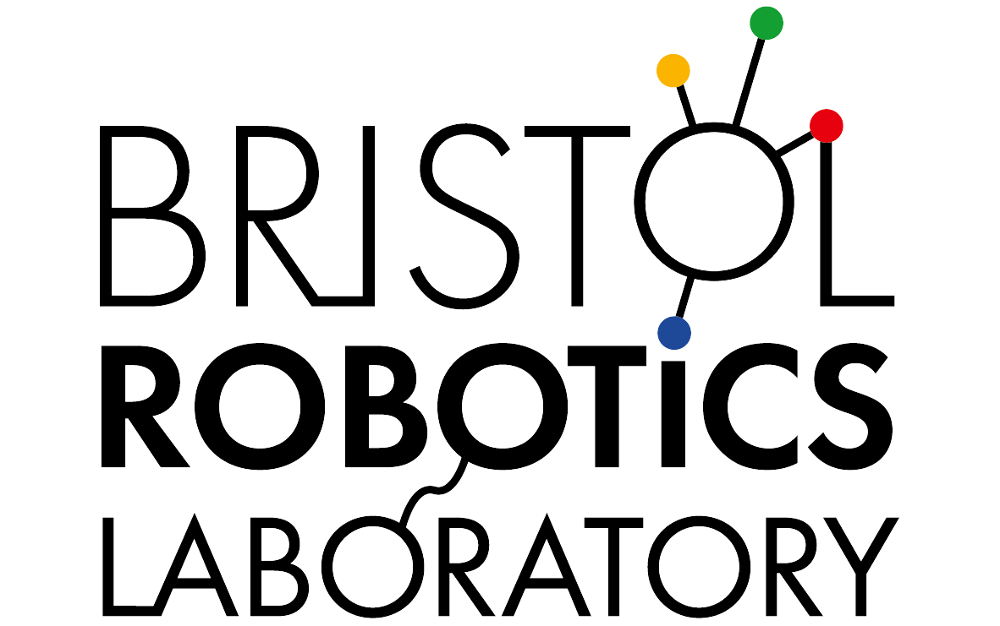
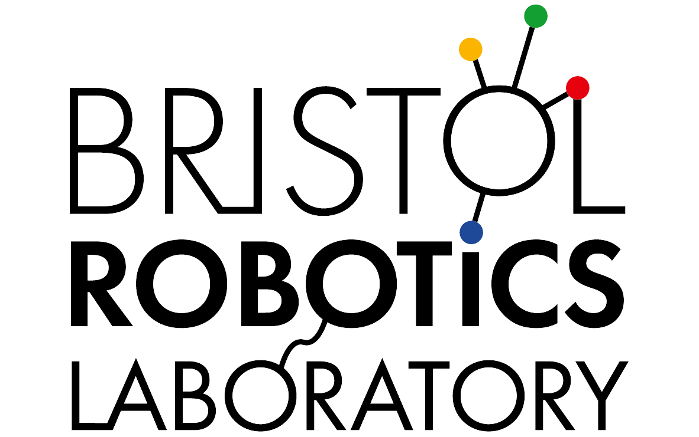
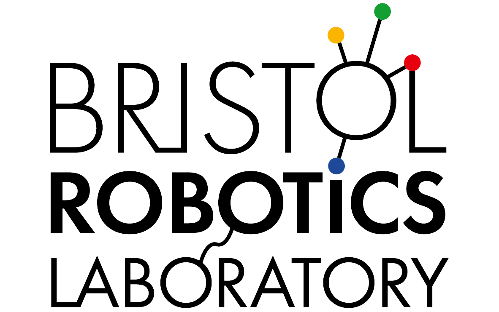
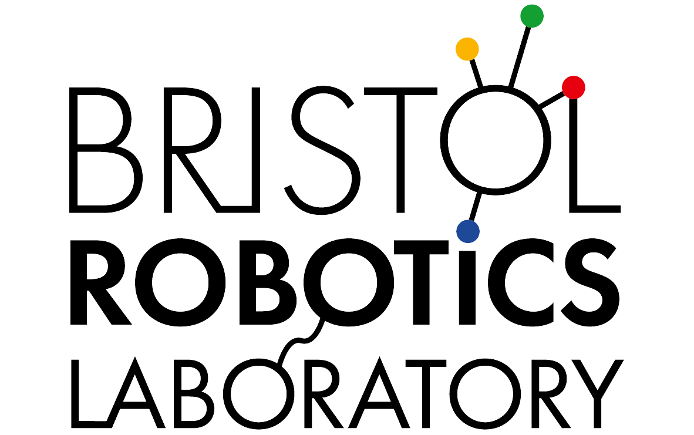

Maintaining Plasticity in Reinforcement Learning: A Cost-Aware Framework for Aerial Robot Control in Non-stationary Environments
Submitted to IROS 2025
 



Reinforcement learning (RL) has demonstrated the ability to maintain the plasticity of the policy throughout short-term training in aerial robot control. However, these policies have been shown to loss of plasticity when extended to long-term learning in non-stationary environments. For example, the standard proximal policy optimization (PPO) policy is observed to collapse in long-term training settings and lead to significant control performance degradation. To address this problem, this work proposes a cost-aware framework that uses a retrospective cost mechanism (RECOM) to balance rewards and losses in RL training with a non-stationary environment. Using a cost gradient relation between rewards and losses, our framework dynamically updates the learning rate to continually train the control policy in a disturbed wind environment. Our experimental results show that our framework learned a policy for the hovering task without policy collapse and activated more dormant units in variable wind conditions.


@misc{li_iros_perch,
title={Tendon-driven Grasper Design for Aerial Robot Perching on Tree Branches},
author={TBD},
year={2025},
eprint={24092342342345},
archivePrefix={arXiv},
primaryClass={cs.RO},
url={https://arxiv.org/abs/23423},
}